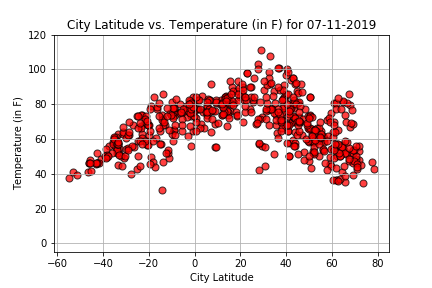

Julia Sweet's Climate Analysis

Welcome to my Weather Py pages. Weather Py was the homework assignment for the API Unit of the Data Visualization and Analysis Bootcamp hosted at University of Minnesota, St. Paul. For this assignment, we used several Python libraries,
including Pandas, Matplotlib, and Numpy. We also used the OpenWeather API and CitiPy. The data was gathered by first generating 1500 random latitude-longitude pairs, then using CitiPy to find the nearest city. CitiPy limits its
results to cities with at least 500 people. Then, the cities were fed into the OpenWeather API. If the city had a weather station, the following data points were gathered: temperature, humidity, wind speed, and cloudiness. As the
query was run on July 11th, 2019, the data reflect measurements for that date.
|
The assignment called for four comparisons to be made and plotted. Each of the analyses compared one weather-related metric with a city's latitude. We were to try to draw conclusions about weather patterns as they pertained to latitude.
Specifically, we looked at the relationships between latitude and temperature, wind speed, humidity, and cloudiness. You can navigate to any visualization, accompanied by my analysis, by clicking on the thumbnail of the visualization
or by selecing the comparison from the drop-down menu above. If you are interested in viewing my source code, visit my github repository for the project.